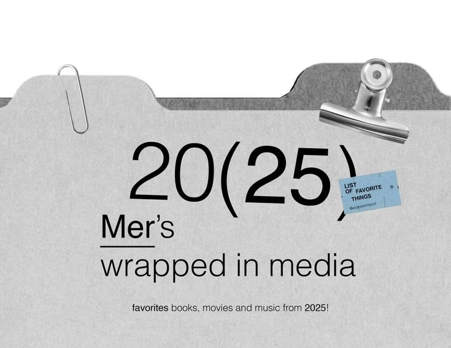

위 그림은 두 번째 참고 이미지를 보고 코드로 다시 그린 표지 견본이에요. 이 문서의 나머지는 이 규칙을 정리한 거예요.
Reference (8)
이미지를 눈으로 읽은 결과예요. 위치와 비율은 눈대중으로 잰 근사값이에요.

- 1
종이 파일철이 화면을 채워요. 위쪽 약 18%는 흰 여백이고, 그 아래가 회색 폴더예요. 밝은 앞 폴더는 왼쪽에, 짙은 뒤 폴더는 오른쪽에 탭이 솟아 있어서 두 겹으로 보여요.
- 2
종이 질감. 회색 면에 고운 알갱이가 깔려 있어요. 그림자는 앞 폴더가 뒤 폴더에 드리우는 얇은 것 하나뿐이에요.
- 3
사진 같은 소품 세 개. 은색 종이클립(왼쪽 위), 은색 바인더 클립(오른쪽 위), 파란 스티커. 클립은 폴더의 모서리를 물고 있어요.
- 4
굵기 대비로 강조. "20(25)"에서 "20"은 가늘고 "25"는 굵어요. 괄호는 크고 가늘어요. 색 대신 굵기로 강조해요.
- 5
왼쪽 정렬 덩어리. "Mer's", 짧은 밑줄, "wrapped in media"가 같은 왼쪽 선(약 22%)에 서 있어요. "Mer"만 크게 쓰고 밑줄을 그어 이름처럼 보여요. 큰 숫자는 그보다 조금 오른쪽(약 29%)에서 시작해요.
- 6
가운데 한 줄 캡션. 맨 아래 작은 글씨 한 줄만 가운데 정렬이고, 그 안에서 "favorites"와 "2025"만 굵게 써요.
- 7
색은 회색 두 톤과 파란 스티커 하나. 글자는 검정이에요. 파란색은 이 스티커 한 곳뿐이에요.
- 8
대부분 비어 있어요. 글자는 폴더 가운데에만 모여 있고 위쪽과 양옆은 비어 있어요. 소품은 글자를 가리지 않고 한 군데만 살짝 겹쳐요(스티커가 ")"에 걸침).
| 요소 | 가로 위치 | 세로 위치 | 메모 |
|---|---|---|---|
| 위쪽 흰 여백 | 전체 폭 | 0 ~ 18% | 뒤 폴더 탭이 가장 높은 곳이 약 17.6% |
| 앞 폴더 왼쪽 탭 | 0 ~ 35% | 윗선 약 22.5% | 오른쪽 윗모서리만 둥글어요. 본체 윗선은 약 30% |
| 뒤 폴더 오른쪽 탭 | 65 ~ 100% | 윗선 약 17.6% | 색은 앞 폴더보다 한 단계 짙어요 |
| 큰 제목 20(25) | 29 ~ 79% | 40 ~ 62% | 시트 폭의 절반 정도 |
| 왼쪽 정렬 덩어리 | 22% 시작 | 62 ~ 81% | 이름, 밑줄, 부제가 같은 왼쪽 선 |
| 가운데 캡션 | 가운데 정렬 | 약 87% | 작은 글씨, 굵은 낱말 둘 |
Principles (7)
참고 이미지에서 뽑은 규칙이에요. 첫 번째 가이드의 "흑백 시트"와는 다른 성격이에요.
- 종이 위에 올린다
- 화면 전체를 한 장의 회색 종이 파일철로 만들어요. 위쪽 흰 여백, 탭 모양의 윗선, 고운 알갱이 질감이 기본이에요.
- 굵기 대비로 강조한다
- 같은 줄 안에서 가는 글씨와 굵은 글씨를 섞어요. 색으로 강조하지 않아요. 로고도 "Hand(off)"처럼 써요.
- 괄호를 크게 쓴다
- 숫자나 낱말을 괄호로 감싸요. 괄호는 가늘게, 안의 글자는 굵게 해요. 번호 매기기를 대신해요.
- 왼쪽 덩어리와 가운데 한 줄
- 제목 묶음은 같은 왼쪽 선에 세우고, 맨 아래 보조 한 줄만 가운데에 놓아요.
- 소품은 모서리에만
- 클립은 폴더 윗모서리에, 스티커는 큰 글자 끝에 한 번만 걸쳐요. 입력칸, 버튼, 표 위에는 올리지 않아요. 한 화면에 소품은 세 개까지예요.
- 색은 회색과 파란 스티커 하나
- 회색 두 톤과 검정 글자가 전부예요. 파란색은 스티커와 "지금 단계" 표시에만 써요.
- 비워 둔다
- 글자는 폴더 가운데에 모으고 위쪽과 양옆은 비워 둬요. 비어 있는 곳이 곧 "빠진 페이지"라는 서비스의 이야기와도 맞아요.
Tokens (color · type)
코드에서는 이 이름 그대로 쓸 값이에요.
바깥 바탕, 구멍(빠진 칸)
앞 폴더, 종이 면 (검정 글자 대비 10.6:1)
뒤 폴더, 안 고른 탭 (흰 글자 5.0:1)
글자, 선, 채워진 칸
스티커 전용. 글자 #10243d (9.4:1)
| 토큰 | 크기 | 쓰는 곳 |
|---|---|---|
| hero | 폴더 폭의 12.8% (최소 44px) | 시작 화면, 표지에서 한 번만 |
| name / sub | 폴더 폭의 6.4~6.6% | 조직 이름, 화면 제목 |
| body | 15px | 설명 글 |
| caption | 폴더 폭의 약 2% (최소 12px) | 맨 아래 한 줄, 라벨 |
| sticker | 9.2em 폭, 글자 0.62~1em | 조직·부서 같은 메타 정보 한 곳 |
종이 알갱이는 SVG 노이즈(feTurbulence) 하나로 만들어서 이미지 파일이 필요 없고 가벼워요. 한글은 영문보다 글자가 무거우니 hero 외에는 자간을 -0.04em 이상 줄이지 않아요. 붉은 오류색은 회색 종이 위에서 대비가 약해서(약 2:1) 쓰지 않고, 오류는 굵은 글씨와 밑줄로 표시해요.
Props (3)
참고 이미지의 사진 같은 소품을 코드로 만든 견본이에요.
이렇게
- 소품은 폴더의 윗모서리나 큰 글자 끝에만 걸쳐요. 한 화면에 세 개까지.
- 스티커에는 조직·부서 같은 메타 정보 한 줄만 적어요. 글자는 0.62~1em 사이.
- 소품에는 그림자를 쓰고, 나머지에는 쓰지 않아요.
- 소품은 장식이라서 스크린 리더에는 숨기고, 의미가 있는 정보는 글자로도 보여줘요.
이렇게는 하지 않기
- 입력칸, 버튼, 표 위에 소품을 올리지 않아요.
- 소품을 네 개 이상 쓰거나 움직이게 하지 않아요.
- 파란색을 스티커와 "지금 단계" 밖에서 쓰지 않아요.
- 모바일(폭 640px 이하)에서는 바인더 클립을 숨겨서 화면이 답답해지지 않게 해요.
이 견본은 SVG로 그린 근사한 모양이라 참고 이미지의 사진처럼 실감 나지는 않아요. 더 비슷하게 하려면 투명 배경으로 오려낸 실제 사진(PNG)으로 바꿔야 하는데, 사진은 직접 구하거나 저작권을 확인해야 해요.
Components (7)
지금 앱의 요소를 이 규칙으로 바꾼 모양이에요. 회색 종이 위에서의 모습이에요.
Screen tabs
화면 3개는 폴더 탭이에요. 지금 화면은 앞 폴더 색, 나머지는 뒤 폴더 색이에요.
Sticker · Steps
조직 정보는 스티커 하나로, "지금 단계"는 스티커처럼 붙여요.
Input
종이에 쓰는 줄이에요. 상자 대신 아래 선 하나, 라벨은 위에 작게.
Button · Choice
버튼은 검은 직사각형, 보조는 밑줄 글자. 선택지는 붙어 있는 네모예요.
Error
붉은색 없이 굵은 글씨와 밑줄로 표시해요.
(오류) 조직 이름을 입력해 주세요
(오류) 지원하지 않는 파일: 회칙.docx
Checklist
검은 칸은 채워진 정보, 하얀 칸은 종이에 뚫린 구멍(빠진 정보). 모양만으로 구분하지 않도록 칸 안에 글자도 함께 써요.
List row
카드 대신 위아래 선 한 줄.
Screens (2)
시작 화면과 분석 결과를 이 규칙으로 그린 견본이에요. 실제 앱은 아직 바뀌지 않았어요.
빠진 것까지 인수인계 · AI 우왕톤 2026!
빈 곳 6확인 권장없음모호함없음없음없음 회비 정산
빈 곳 4확인 권장없음확인됨모호함없음해당 없음 대회 참가
빈 곳 4확인됨없음모호함없음없음해당 없음
지금은 목 데이터로 보는 화면이에요 · 검은 칸이 많을수록 잘 채워진 인수인계예요
Decisions (5)
코드에 들어가기 전에 정할 것이에요. 추천을 먼저 적었어요.
- 두 가이드 중 무엇을 기본으로① 첫 번째(검은 프레임, 흰 시트, 흑백) ② 이번 것(회색 파일철) ③ 섞기. 추천은 ③이에요. 서비스가 "인수인계 파일"이라서 파일철 틀과 탭이 잘 맞고, 데이터가 많은 체크표와 입력칸은 흑백 규칙이 읽기 쉬워서 틀은 이번 것, 표 규칙은 첫 번째를 쓰는 거예요. 두 가이드의 체크표 규칙(검은 칸 = 채워짐, 흰 칸 = 빠짐)은 이미 서로 같아요.
- 소품은 무엇으로SVG로 그린 가벼운 버전(이 견본)으로 시작할지, 실제 사진 PNG를 구해서 쓸지. 추천: SVG로 시작해서 필요하면 바꿔요. 사진은 저작권 확인이 필요해요.
- 종이 질감시작 화면과 틀에만 쓸지, 모든 면에 쓸지. 추천: 틀(탭, 종이)에만. 표 안은 질감 없이 깨끗하게 둬요.
- 파란색스티커와 "지금 단계" 표시에만 허용할지. 추천: 허용. 그 밖에는 쓰지 않아요.
- 모바일폭 640px 이하에서는 바인더 클립을 숨기고, 탭은 줄바꿈을 허용해요. 추천: 그대로 진행.
적용 순서
- 1 · 토큰과 질감index.css에 색, 알갱이, 글자 크기를 넣고 서체를 바꿔요.
- 2 · 파일철 틀위쪽 흰 여백, 폴더 탭(화면 이동), 종이 면을 만들어 모든 화면에 씌워요.
- 3 · 소품클립과 스티커를 컴포넌트로 만들어 시작 화면과 조직 정보에 붙여요.
- 4 · 입력과 버튼아래 선 입력, 검은 버튼, 붙은 선택지로 바꿔요.
- 5 · 체크표와 목록검은 칸/흰 칸 방식으로 바꾸고, 카드를 선 한 줄로 바꿔요.
현재 테스트(89개)는 역할과 글자로 요소를 찾기 때문에 대부분 그대로 통과해요. 화면 이동이 탭으로 바뀌면 그 부분 테스트만 같이 고쳐요.